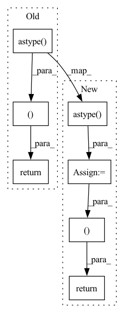

Pattern ID :6791

Before Change
frame_list = glob.glob(os.path.join(self.data_path, "*.npz"))
frame_fname = frame_list[index]
frame = np.load(frame_fname)
return frame["points2"].astype("float32"), frame["points1"].astype("float32"),\
frame["color2"].astype("float32"), frame["color1"].astype("float32"), frame["flow"].astype("float32"),\
frame["valid_mask1"]
After Change
pos1 = frame["points1"].astype("float32")
pos2 = frame["points2"].astype("float32")
color1 = frame["color1"].astype("float32")
color2 = frame["color2"].astype("float32")
flow = frame["flow"].astype("float32")
mask1 = frame["mask"]
pos1_center = np.mean(pos1, 0)
pos1 -= pos1_center
pos2 -= pos1_center
return pos2, pos1, color2, color1, flow, mask1
In pattern: SUPERPATTERN
Frequency: 4
Non-data size: 7
Instances
Fragment ID: 23175473
Project Name: jabb0/fastflow3d
Commit Name: 2a9e1d32b970c9ce036103c7ae379c2e3b6c18f7
Time: 2021-07-28
Author: aron.distelzweig@hotmail.com
File Name: data/FlyingThings3DDataset.py
M Class Name: FlyingThings3DDataset
N Class Name: FlyingThings3DDataset
M Method Name: read_point_cloud_pair_and_flow(2)
N Method Name: read_point_cloud_pair_and_flow(2)
M Parent Class: Dataset
N Parent Class: Dataset
M File Name: data/FlyingThings3DDataset.py
N File Name: data/FlyingThings3DDataset.py
M Start Line: 67
M End Line: 70
N Start Line: 67
N End Line: 80
'>
Before Change
if index >= self.n_samples:
raise IndexError()
np.random.seed(index)
return index, np.random.randn(*self.shape).astype("<f4")
class TripleDummyActivationsDataset(Dataset):
def __init__(self, n_samples, shape):
After Change
if index >= self.n_samples:
raise IndexError()
np.random.seed(index)
to_return = np.random.randn(*self.shape).astype("<f4")
if self.is_ch:
to_return = ch.from_numpy(to_return)
return index, to_return
class TripleDummyActivationsDataset(Dataset):
def __init__(self, n_samples, shape):
'>
Fragment ID: 23175472
Project Name: libffcv/ffcv
Commit Name: 0dfcbaa0317e4d146ac77a4ffa261721c8771863
Time: 2022-01-28
Author: leclerc@mit.edu
File Name: tests/test_array_field.py
M Class Name: DummyActivationsDataset
N Class Name: DummyActivationsDataset
M Method Name: __getitem__(2)
N Method Name: __getitem__(2)
M Parent Class: Dataset
N Parent Class: Dataset
M File Name: tests/test_array_field.py
N File Name: tests/test_array_field.py
M Start Line: 26
M End Line: 26
N Start Line: 28
N End Line: 32
'>
Before Change
stacked_maps[map_index, :, :, :] = spatio_temporal_map
map_index += 1
return True, stacked_maps.astype(np.uint8).transpose((1, 0, 2))
After Change
(idx, w, h, c) = stacked_maps.shape
stacked_maps = stacked_maps.reshape((idx, h, w, c))
stacked_maps = stacked_maps.astype(np.uint8)
return True, stacked_maps
'>
Fragment ID: 23175477
Project Name: tvs-ai/pytorch_rppgs
Commit Name: fb7669c43864d13d11528ad55745d21e2ce0635e
Time: 2022-10-19
Author: 57242033+najy97@users.noreply.github.com
File Name: utils/image_preprocess.py
M Class Name: AnonimousClass
N Class Name: AnonimousClass
M Method Name: RhythmNet_preprocessor(2)
N Method Name: RhythmNet_preprocessor(2)
M Parent Class:
N Parent Class:
M File Name: utils/image_preprocess.py
N File Name: utils/image_preprocess.py
M Start Line: 984
M End Line: 1102
N Start Line: 1004
N End Line: 1109
'>
Before Change
self,
dataset: pd.DataFrame,
) -> Output(statistics=pd.DataFrame, schema=pd.DataFrame):
return dataset.describe(), dataset.dtypes.to_frame().T.astype(str)
After Change
include=config.include,
exclude=config.exclude,
).T
schema = dataset.dtypes.to_frame().T.astype(str)
return statistics, schema
'>
Fragment ID: 23175476
Project Name: maiot-io/zenml
Commit Name: 61ced1ec6a56b3b012d684d793a07e815e016853
Time: 2021-12-08
Author: bariscandurak@hotmail.com
File Name: src/zenml/steps/builtin_steps/pandas_analyzer.py
M Class Name: PandasAnalyzer
N Class Name: PandasAnalyzer
M Method Name: entrypoint(3)
N Method Name: entrypoint(2)
M Parent Class: BaseAnalyzerStep
N Parent Class: BaseAnalyzerStep
M File Name: src/zenml/steps/builtin_steps/pandas_analyzer.py
N File Name: src/zenml/steps/builtin_steps/pandas_analyzer.py
M Start Line: 28
M End Line: 28
N Start Line: 38
N End Line: 46